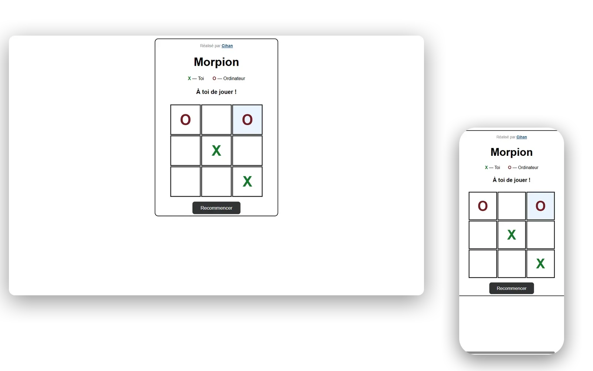

Morpion vs Machine
Contrôle de fin de module Dev Back en B1. La mission : un mini-jeu fonctionnel jouable contre l'ordinateur, entièrement en PHP. C'est le seul projet de mon portfolio où je n'ai pas écrit une ligne de JavaScript. Toute la logique tourne côté serveur, l'état de la partie est conservé en session.

Le contexte
Contrôle de fin de module Dev Back. Consigne du prof : un mini-jeu fonctionnel jouable contre l'ordinateur, 100% en PHP. Pas de JavaScript autorisé. L'idée du sujet, c'est de t'obliger à raisonner côté serveur : gérer l'état d'une partie entre deux requêtes HTTP, et coder une "intelligence" dans le langage où on a l'habitude d'envoyer juste du HTML.
L'IA de l'ordinateur : cinq règles par priorité
- Gagner si possible : si l'ordi a deux symboles alignés et la 3ᵉ case vide, il joue.
- Bloquer sinon : si le joueur a deux symboles alignés et la 3ᵉ vide, il bloque.
- Sinon, prendre le centre (position stratégique).
- Sinon, prendre un coin (deuxième meilleure position).
- Sinon, première case vide trouvée.
Ce n'est pas du vrai minimax : l'ordi peut perdre contre un joueur expérimenté qui sait ouvrir par un coin. Mais pour le contrôle, c'était suffisant : adversaire battable mais pas trivial.
Côté technique
État conservé en $_SESSION (grille de 9 cases, gagnant courant, état match nul, dernière case jouée par l'ordi pour la highlighter en bleu pâle). Détection de victoire par itération sur les 8 combinaisons gagnantes du morpion. Chaque coup du joueur déclenche un POST qui modifie la grille, appelle la fonction de coup de l'ordi, vérifie l'état final, et recharge la page. C'est lent visuellement (page complète à chaque coup), mais c'était la contrainte du sujet. Sur un vrai projet je piloterais ça en AJAX, mais ici l'exercice c'était justement de faire sans.